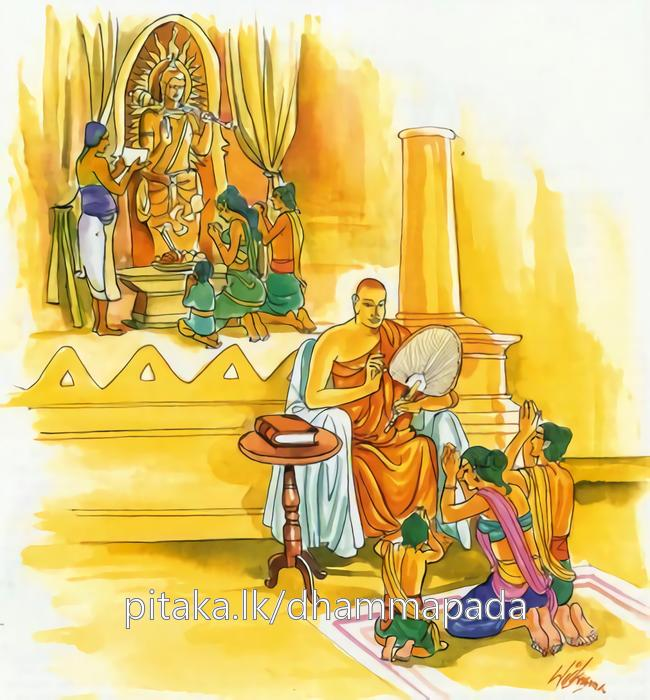

8-2 දෙවන දාරුචීරිය තෙරුන්ගේ වස්තුවයි.
මෙම කතාව සද්ධර්ම සාගරයෙන් ද කියවන්න.
සහස්සමපි චෙ ගාථා අනත්ථපදසංහිතා
එකං ගාථාපදං සෙය්යො යං සුත්වා උපසම්මති.
අනර්ත්ථපදයෙන් යුත් ගාථා දහසක් වූ නමුදු ඔහු උතුම් නො වෙති. යම් එක් ගාථාපදයකුදු අසා පුගුල් තෙම (කෙලෙස් සංහිඳී-මෙන්) සංහිඳේ ද, එසේ වූ එක් ගාථාපදය ම උතුමි.

සහස්සම්පි චෙ ගාථා යනාදි මේ ධර්මදේශනාව බුදුරදුන් දෙව්රම වැඩසිටින කාලයේ දාරුචීරිය තෙරුන් නිමිතිකොට දේශනා කරනලදි.
එක් කලෙක බොහෝ මිනිස්සු නැවකට නැගී මහ මුහුදේ මැදදී නැව බිඳීගොස් මත්ස්යයන්ගේ ආහාර බවට පත්වූහ. එයින් එක් මිනිහෙක් ලෑලි කැබැල්ලක එල්ලී ඉතාමත් දැඩි වෑයමකින් සුප්පාරකපටුන නම් තැනට ගොඩබැස්සේය. ඔහුට ඇඳුම් පෙරවුම් සඳහා රෙදිපිළි නැතිවිය. හෙතෙම වෙනත් කිසිවක් නොදැක දරලෑලි පතුරු රැගෙන ඒවා වැල්වලින් ගොතා අඳනා පොරවනා සාදාගෙන දෙවොලකින් වළං කබලක් රැගෙන සුප්පාරකපටුනට ගියේය. එහි මිනිස්සු ඔහු දැක කැඳබත් ආදිය දී මේත් එක් රහත් කෙනෙක්යයි සිතා සැලකිලි දැක්වූහ.
හෙතෙම රෙදිපිළි ගෙනත් දුන් කල ඉදින් මා මේවා හැඳීම් පෙරවීම් කළහොත් ලාභසත්කාරයෙන් පිරිහී යා හැකියයි ඒවා ප්රතික්ෂේප කර දරවලින් තැනූ ඇඳුම්ම පරිහරණය කෙළේය. ඉන්පසු බොහෝ දෙනා ඔහුට රහතන්වහන්සේ රහතන්වහන්සේයයි කීම නිසා මෙබඳු සිතිවිල්ලක් ඇතිවිය.
ලොව කවුරුන් හෝ රහතුන් හෝ රහත්මගට පැමිණි කෙනෙක් වෙත්නම් මමත් එබඳු කෙනෙක්මි කියාය. ඉන්පසු පැරණි කාලයක ඔහු හා එකට සිටි දෙවියෙක් මෙසේ සිතීය. පුරාණ සගයෙක් යනු පෙර කාලයක එකට මහණදම් පිරූ කෙනෙකි. අතීතයේ කාශ්යපබුදුරදුන්ගේ සසුන පිරිහී යනකල්හි සාමණේරාදීන්ගේ විප්රකාර දැක සංවේගයට පැමිණි භික්ෂූන් සත්නමක් සසුන අතුරුදහන් වීමට පෙර තමන් කිසියම් ස්ථාවරත්වයකට පැමිණිය යුතුයයි ස්වර්ණචෛත්යය වැඳපුදා වනයට පිවිසියාහුය. එහිදී එක් පර්වතයක් දැක ජීවිතය ගැන ආශා ඇත්තෝ නවතිත්වා, එබඳු ආශා නැති අය මේ පර්වතයට නැංගයුතුයයි කථිකා කරගෙන හිණිමඟක් බැඳගෙන සියලු දෙනාම පර්වතයට නැගී හිණිමඟ පහතට දමා මහණදම් පිරූහ.
ඔවුන් අතර සිටි සංඝස්ථවිරයන්වහන්සේ (ප්රධාන) එක්රැයක් ඉක්මෙනවිටම රහත්බවට පැමිණියහ. උන්වහන්සේ අනෝතත්ත විලෙහිදී නාලියදැහැටි වළඳා උතුරුකුරු දිවයිනෙන් පිණ්ඩපාත ලබා ගෙනවුත් ඒ භික්ෂූන්ට කතා කොට, ඇවැත්නි, මේ දැහැටි වළඳා මුවසෝදාගෙන මේ පිණ්ඩපාතය වළඳවයි කීහ. ස්වාමීනි, කිම? අපෙන් යමෙක් පළමුව රහත් වුණොත්, ඔහු විසින් ගෙනා පිණ්ඩපාතය අනිත් අය වැළඳිය යුතුයයි අපි කථිකාකරගෙන ඇද්දැයි විචාළහ. ඇවැත්නි, එබඳු කතිකාවක් නැත. එසේනම් ස්වාමීනි, අපිත් ඔබ මෙන් විශේෂත්වයක් උපදවාගන්නෙමුයයිද කියා පිණ්ඩපාතය නොකැමති වූහ. දෙවෙනි දිනයේදී දෙවෙනි තෙරණුවෝ අනාගාමී ඵලයට පැමිණියහ. උන්වහන්සේත් පිණ්ඩපාතය රැගෙන අවුත් අනිත් අයට නිමන්ත්රණය කළෝය. උන්වහන්සේලා කිම? ස්වාමීනි, මහතෙරුන් ගෙනා පිණ්ඩපාතය නොගෙන දෙවෙනි තෙරුන් ගෙනා පිණ්ඩපාතය වළඳන්නෙමුයයි අපි කතිකාවක් කෙළෙමුද? නැත ඇවැත්නි. එසේනම් ඔබ මෙන් අපිද විශේෂත්වයකට පැමිණ තමන්ගේ පුරුෂ ධෛර්යයෙන් වළඳන්ට හැකි වෙමුයයි පිණ්ඩපාතය නොවැළඳූහ. ඔවුනතර රහත් බවට පත් භික්ෂූන්වහන්සේ පිරිනිවුණාහ. අනාගාමීතෙරණුවෝ මිය පරලොව ගොස් බඹලොව උපන්හ. අනිත් පස්නම විශේෂත්වයක් නොලබාම වියළී-හොඳටම වියළීගොස් සත්වෙනි දිනයේ කාලක්රියා කොට දෙව්ලොව ඉපදී මේ බුද්ධාන්තරයේදී දෙව්ලොවින් චුතව ඒ ඒ කුලගෙවල්වල උපන්හ.
එයින් එක්කෙනෙක් පුක්කුසාති රජ විය. අනිත් කෙනෙක් කුමාරකස්සප විය. එක් කෙනේ දාරුචීරිය විය. එක් කෙනෙක් දබ්බමල්ලපුත්තය. තව කෙනෙක් සහිය පරිව්රාජක විය. ඒ අතර බඹලොව උපන් භික්ෂුව සඳහායි මෙහි පුරාණසාලොහිත දේවතා නමින් සඳහන් කරනලද්දේ. ඒ බ්රහ්මයාට මෙබඳු සිතක් ඇතිවිය. මොහු මා සමග හිණක් බැඳ පර්වතයට නැගී මහණදම් පිරීය. දැන් මොහු වැරදි ලබ්ධියක් ගෙන වැනසෙන්නේය. ඔහුට සංවේගය උපදවන්නෙමි කියාය.
ඉන්පසු ඔහු බාහිය ළඟට ගොස්, බාහිය ඔබ රහත්වී නැත. රහත්මගකට පැමිණිලාත් නැත. ඔබේ ඔය ප්රතිඥාවෙන් ඔබ රහත්වන්නේ හෝ රහත්මගකට පිවිසෙන්නේ නැත. බාහිය අහසෙහි සිට කතාකරන මහාබ්රහ්මයා දෙස බලා, අනේ මම බැරෑරුම් දෙයක් කෙළෙමි. මම රහත්මීයි සිතීමි. මේ තෙමේත් මා රහත් වී නැතිබවත් එබඳු මගකට පිවිසී නැති බවත් කියයි. ලොව රහත් නමින් වෙනත් කිසිවෙක් ඇද්දැයි සිතීය. බාහිය මෙසේ ඇසීය, දේවතාවනි, ලෝකයේ මේ කාලයේ රහත්වුණු හෝ රහත්මගට පිළිපන් කිසිවෙක් ඇත්තේද? ඉන්පසු දෙවියා, බාහියට කථාකොට බාහිය එබන්දෝ සිටිති. උතුරු ජනපදයේ සැවැත් නම් නුවරක් ඇත. එහි ඒ භාග්යවතුන්වහන්සේ වැඩ සිටිති. බාහිය, උන්වහන්සේ රහත්ය. රහත්බව ලබාදීම පිණිස දහම් දෙසන්නෝයයි කීවේය. බාහිය පසුගිය රාත්රියේ දේවතාවා කළ කථාව අසා සංවේගයට පැමිණ එවේලාවේම සුප්පාරක පටුනින් නික්මී එක් රැයක ඇවෑමෙන් සැවැත්නුවරට ගියේය. සියලු එක්සියවිසි ගව්වම එක් රැයකින්ම ගියේය. එසේ යන ඔහුට දේවතාවන්ගේ ආනුභාවයද ලැබුණේය. බුද්ධානුභාවයෙන් ගියේයයිද කියති.
ඒ වේලාවෙහි ශාස්තෘන්වහන්සේ සැවැත්නුවර පිඬුපිණිස හැසුරුණාහ. උන්වහන්සේ උදේ ආහාර වැළඳීමෙන් පසු ශාරීරික අලස බැවින් මිදෙනු පිණිස ඉඩපාඩු ඇති තැනක සක්මනෙහි යෙදී සිටියදී බොහෝ භික්ෂූන් සිටි තැනට ගිය බාහිය මේ වේලාවේ භාග්යවතුන්වහන්සේ කොහිදැයි විචාළේය. භික්ෂූහු, භාග්යවතුන්වහන්සේ පිඬුපිණිස සැවැත්නුවරට වැඩිය බව කියා, ඔබ කොහිසිට ආවෙහිදැයි ඇසූහ. මම සුප්පාරකයේ සිට එන්නෙමි. පිටත් වුණේ කවදාද? ඊයේ සවස පිටත් වුණෙමි. ඔබ බොහෝ දුර සිට එන්නෙහිය. ඉඳගන්න. ඔබේ පා දොවාගෙන තෙල් ගා මඳක් විවේක ගන්න. බුදුන් ආකල බලාගන්න.
ස්වාමීනි, මම බුදුරදුන්ගේ හෝ මගේ හෝ ජීවිත අන්තරාය කොයි වේලේ සිදුවේදැයි නොදනිමි. කිසිතැනක නොරැඳී එක්සියවිසි යොදුනක් එක් රැයකින්ම ආවෙමි. බුදුන් දැක ගැනීමෙන් පසුවම විවේක ගන්නෙමියි කීවේය.
මෙසේ කී ඔහු යුහුසුලු ගමනින් සැවතට වැද උපමා රහිත බුදුසිරියෙන් යුක්තව පිඬුපිණිස හැසිරෙන බුදුන් දැක මම බොහෝ කලකින් ගෞතමසම්මාසම්බුදුන් දුටුවෙමියි දුටු තැන් පටන් සිරුර නමාගෙන අවුත් ඇතුළුවීථිය තුළදීම පසඟ පිහිටුවා වැඳ පයේ ගොප්මස දැඩිව අල්ලාගෙන භාග්යවතුන්වහන්ස, මට දහම් දෙසනසේක්වා, සුගතයන්වහන්ස මට දහම් දෙසනසේක්වා, එය දිගුකලක් හිතවැඩ පිණිස හේතු වන්නේයයි ඉල්ලා සිටියේය. ඉන්පසු ඔහු ඇමතූ ශාස්තෘන්වහන්සේ, බාහිය, මේ දැන් මම ගෙවල්වලට ගොස් පිණ්ඩපාතය ලබා ගන්නා වේලාවයි. එහෙයින් මේ දහම් දෙස වේලාවක් නොවේයයි ප්රතික්ෂේප කළහ. ඒ ඇසූ බාහිය, ස්වාමීනි, සසර සැරිසරණ අය විසින් කබලු වශයෙන් ගන්නා ආහාර නොලැබූ වාර කෙළවරක් නැත. ඔබවහන්සේගේ හෝ මගේ ජීවිතයට අනතුරක් වන්නේ කොයි වේලාවේදැයි මම නොදනිමි. එහෙයින් මට දහම් දෙසන සේක්වායි ඉල්ලා සිටියේය. ශාස්තෘන්වහන්සේ දෙවෙනි වරත් ප්රතික්ෂේප කළහ.
බුදුන් එසේ දේශනා නොකෙළේ, මොහුට මා දැක්නට ලැබුණු වේලාවේ පටන් මුළු සිරුර නිරන්තරව ප්රීතියෙන් මැඩීගොස් ඇත. බලවත් ප්රීතිවේගය නිසා ධර්මය ඇසුවත් එය අවබෝධ කරගැනීමට අපොහොසත්ය. මගේ මැලිකමත් දැන ටික වේලාවක් සිටිවිට ප්රීතියද තුනීවී ගොස් මධ්යස්ථ උපේක්ෂක බව ඇතිවේ. එතෙක් සිටියා වේ. එක් රැයකින් එක්සිය විසි යොදුනක් මග ගෙවූ හෙයින් එහි මහන්සියද ඇත. එයද මඳක් අඩුවී යන්නේයයි සිතාගෙනය.
එහෙයින් දෙවරක් ප්රතික්ෂේප කොට තෙවෙනි වර ඉල්ලා සිටි විට ඇතුළුවීථියේ සිට ගෙනම, බාහිය ඔබ මෙසේ හික්මිය යුතුය. දුටු දෙයෙහි දැකීම් මාත්රයක් පමණක් ගතයුතුය ආදි වශයෙන් බණ වදාළසේක. ඔහු බුදුබණ අසමින්ම සියලු කෙලෙස් නසා පිළිසිඹියා හා සමග රහත්වය. එකෙණෙහිම ඔහු බුදුන්ගෙන් පැවිද්ද ඉල්ලා සිටියේය. ඔබේ පාසිවුරු සොයාගෙන එවයි වදාරා උන්වහන්සේ වැඩියහ.
බාහිය වනාහි විසිදහසක් අවුරුදු මහණදම් කරමින් තමන්ට ලැබුණු ලාභප්රත්යයන් කිසිවෙකුටත් නොදී තමන්ම පරිහරණය කෙළේය. එකද භික්සුවකට හෝ පාත්රයෙන් සිවුරකින් සංග්රහ නොකෙළේය. එනිසා ඔහුට සෘද්ධිමය පාසිවුරු නොලැබෙනබව දැන එහිභික්ඛු භාවයෙන් පැවිද්ද නොදුන්හ. ඔහු පාසිවුරු සොයා යන අතර එක් යකින්නක් ගවදෙනකගේ වේෂයෙන් අවුත් පපුවට ඇන ඔහු ජීවිතක්ෂයට පත්කළාය.
ශාස්තෘන්වහන්සේ බත්කිස නිමවා බොහෝ භික්ෂූන් සමග නික්මී ගොස් කසළ ගොඩක වැටී තිබුණු බාහියගේ සිරුර දැක භික්ෂූන් අමතා මහණෙනි, මේ සිරුර ගෙනගොස් එක් ගෙදොරක ඇඳක තබා නගරයෙන් බැහැර තැනක දවා ස්තූපයක් කරවයි වදාළසේක. භික්ෂූහු එසේ කළහ. එසේ කොට විහාරයට ගොස් බුදුන් හමුවී තමන් කළ ක්රියාව දන්වා බාහිය උපන්තැන ඇසූහ. ඉන්පසු භාග්යවතුන්වහන්සේ බාහිය පිරිනිවන් පෑබව වදාරා මහණෙනි, මාගේ ශාසනයෙහි, වහා ධර්මය අවබෝධ කරන්නන් අතර බාහියදාරුචීරිය අග්රයයි එතදග්රපාළියෙහි තැබූහ.
ඉන්පසු භික්ෂූහු මෙසේ විචාළාහුය. ස්වාමීනි, ඔබවහන්සේ බාහියදාරුචීරිය රහත් බවට පැමිණිබව කියනසේක. ඔහු රහත්බවට පැමිණියේ කවදාද? මහණෙනි මගේ බණ ඇසූ කාලයෙහිය. ස්වාමීනි, ඔබවහන්සේ ඔහුට ධර්මය දේශනා කරනලද්දේ කවදාද? පිඬුපිණිස හැසිරෙන වේලාවේ අතුරුවීථියෙහිදීය. ස්වාමීනි, පිඬුපිණිස හැසිරෙන ගමන් අතුරුවීථියෙහිදී ඔබවහන්සේ වදාළේ අල්පමාත්ර දහමකි. ඔහු ඒ පමණකින් විශේෂත්වයක් උපදවා ගත්තේ කෙසේද?
අනතුරුව භාග්යවතුන්වහන්සේ ඒ භික්ෂූන් අමතා, මහණෙනි, මාගේ ධර්මය අල්පයයි හෝ බොහෝයයි හෝ නොසිතව්. නිරර්ථක වූ නොයෙක් ගාථා දහස් ගණනක් වුවද ශ්රේෂ්ඨ නැත. අර්ථ සහිතවූ එක් ගාථා පදයක් වුවද වඩා වටින්නේයයි වදාරා අනුසන්ධි ගළපා දහම් දෙසමින් මේ ගාථාවද වදාළහ:
දහසක් වදන් කීවත්
අරුතක් නොමැති නම් එහි
එක දම්පදය වටිනේ වෙයි
ඒ අසා සැනසේ නම්
එහි එකං ගාථාපදං සෙය්යො යනු අප්පමාදො අමතපදං -පෙ- යථා මාතා ති මේ ආදි එකම ගාථාව වුවත් ශ්රේෂ්ඨ වෙයි යන අර්ථයි. සෙස්ස පෙර පරිද්දෙන්ම දත යුතුය. දේශනා කෙළවර බොහෝදෙනා සෝවාන් ඵලාදියට පැමිණියාහුය.